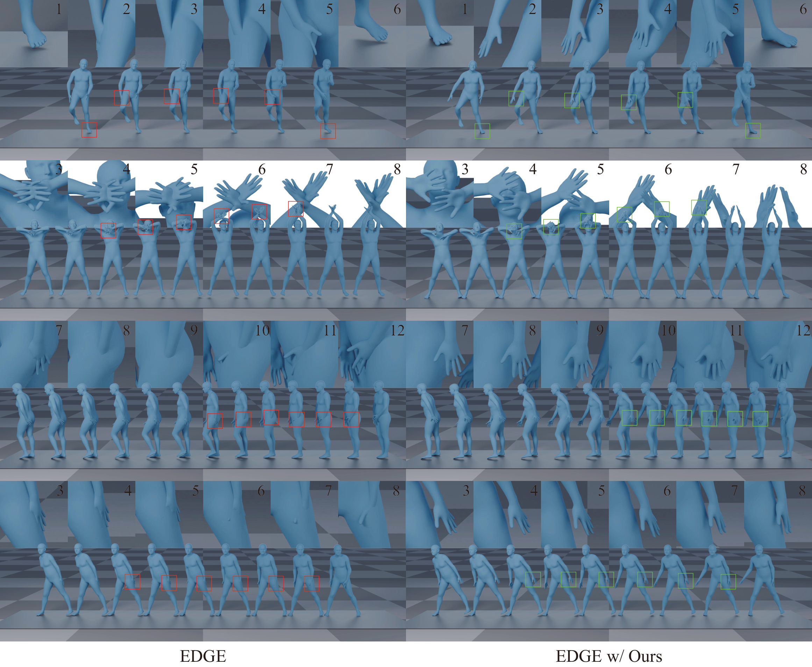
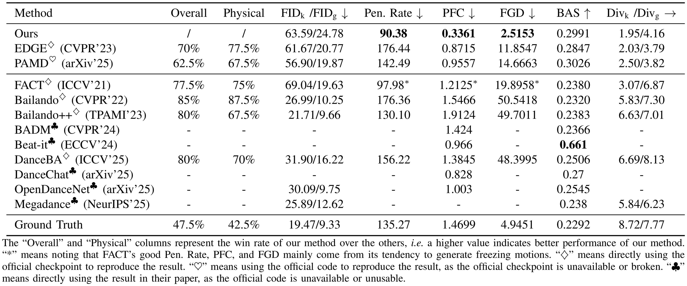
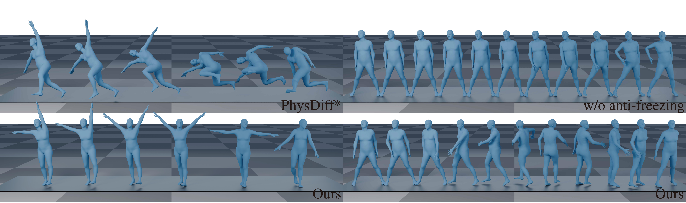
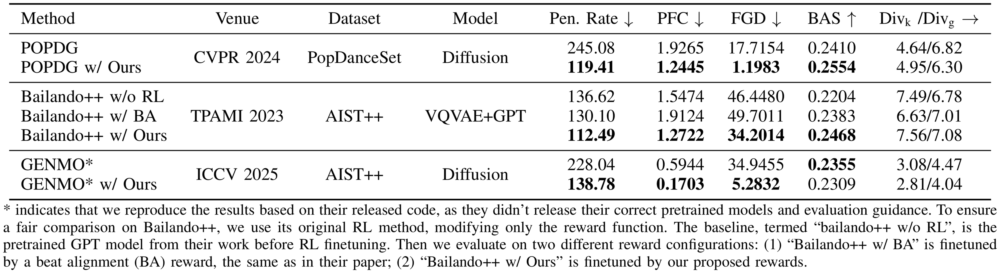

Skeleton2Stage: Reward-Guided Fine-Tuning for Physically Plausible Dance Generation
Abstract
Despite advances in dance generation, most methods are trained in the skeletal domain, overlooking the practical requirement that generated motions remain physically plausible under full-body mesh visualization. Consequently, motions that appear plausible as joint trajectories often exhibit body self-penetration and Foot-Ground Contact (FGC) anomalies under mesh visualization, degrading visual quality and limiting real-world applicability. To address this issue, we propose Skeleton2Stage, a post-training physics-prior distillation framework for physically plausible dance generation. Our key idea is to leverage a physical simulator as a plausibility evaluator and internalize physical priors into diffusion models via Reinforcement Learning Fine-Tuning (RLFT). By evaluating motions sampled from the pretrained generator and increasing the likelihood of more physically plausible ones, RLFT improves physical plausibility while preserving the pretrained dance prior in terms of motion dynamics, music alignment, naturalness, and temporal coherence. Specifically, we first introduce two physics-based rewards: (i) an imitation reward that assesses overall physical plausibility based on motion imitability in the simulator (penalizing penetration and foot skating), and (ii) a Foot-Ground Deviation reward, complemented by lightweight test-time guidance, to better capture dynamic foot-ground interaction. However, we find that optimizing for physical plausibility alone tends to push the model toward freezing motions. We therefore introduce an anti-freezing reward to preserve motion dynamics. Experiments across multiple dance generators and datasets consistently demonstrate improved physical plausibility while preserving overall dance quality. On AIST++ with EDGE as the base generator, Skeleton2Stage reduces self-penetration by 49%.
Results
We evaluate Skeleton2Stage from both qualitative and quantitative perspectives, with a focus on mesh-level physical plausibility, aesthetic quality, and motion-condition consistency across different motion generation models and datasets.

Qualitative Results on EDGE

Quantitative Results

Ablation Study

Generality of Skeleton2Stage Across Models and Datasets
BibTeX
@misc{jia2026skeleton2stagerewardguidedfinetuningphysically,
title={Skeleton2Stage: Reward-Guided Fine-Tuning for Physically Plausible Dance Generation},
author={Jidong Jia and Youjian Zhang and Huan Fu and Dacheng Tao},
year={2026},
eprint={2602.13778},
archivePrefix={arXiv},
primaryClass={cs.CV},
url={https://arxiv.org/abs/2602.13778},
}